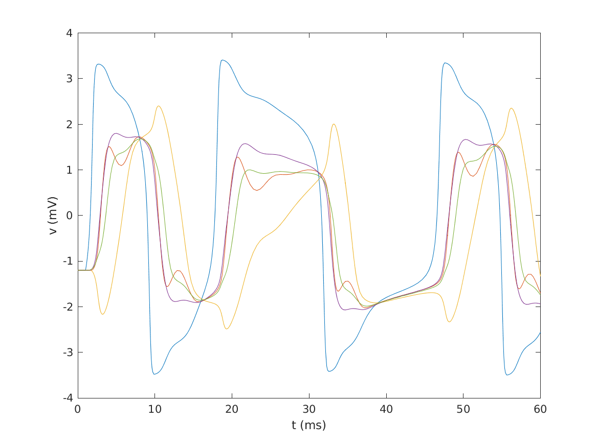

Fitzhugh-Nagumo Network with Delays
Table of Contents
1 The model
- \(v_i(t)\): voltage of neuron \(i\) at time \(t\)
- \(w_i(t)\): recovery variable of neuron \(i\) at time \(t\)
- \(I_i(t)\): current input to neuron \(i\) at time \(t\)
- \(g_{ij}\): coupling conductance from neuron \(j\) to neuron \(i\)
- \(\tau_{ij}\): time delay from neuron \(j\) to neuron \(i\)
2 Coupling conductances and delays
- \(-1\leq g_{ij}\leq 1\) uniformly distributed (\(i\neq j\)), \(g_{ii}=0\)
- \(0\leq \tau_{ij}\leq 1\) uniformly distributed, \(\tau_{ij}=\tau_{ji}\)
% n: number of neurons global n; n = 5; % g: matrix of coupling conductances (n,n) global g; g = 2*rand(n)-1; g(logical(eye(n))) = 0; % tau: matrix of time delays (n,n) tau = rand(n); tau = .5*(tau + transpose(tau)); % lags: flattened list of time delays lags = reshape(tau,[1,n^2]);
3 Equilibrium
The resting membrane potential \(v_{\infty}\) and corresponding recovery variable \(w_{\infty}\) for a single neuron satisfy \(\dot{v}(v_{\infty},w_{\infty})=\dot{w}(v_{\infty},w_{\infty})=0\). Assuming no input current, from \(\dot{v}=0\), we get \(w_{\infty}=v_{\infty}-\frac13v_{\infty}^3\), and substituting this into \(\dot{w}=0\), we get that \(v_{\infty}\) satisfies \(8v_{\infty}^3+6v_{\infty}+21=0\).
% vinf: equilibrium membrane potential % winf: equilibrium recovery variable % solve for equilibrium, select only real soln global vinf; vinf = roots([8 0 6 21]); vinf = vinf(imag(vinf)==0); global winf; winf = vinf - vinf^3/3; % y0: vector of equilibrium values y0 = zeros(2*n,1); y0(1:n) = vinf; y0(n+1:2*n) = winf;
4 Simulation and plot
- set values of \(v_i\) and \(w_i\) to equilibrium for \(t\leq t_0\)
% sol: solution of dde sol = dde23(@fndc,lags,y0,[0,60]); plot(sol.x,sol.y(1:n,:)); xlabel('t (ms)') ylabel('v (mV)') saveas(gcf,'fndc.png')

5 Input current
- 1 mA, 1 ms square impulse to neuron 1 at \(t=1\)
% i_input: input current % t: present time function i = i_input(t) global n; i = zeros(n,1); if t>=1 && t<=2 i(1) = 1; end end
6 Coupled system
% fndc: (f)itzhugh-(n)agumo with (d)elayed (c)oupling % t: present time % y: present values of state variables (2n,1) % z: past values of state variables (2n,n^2) function dydt = fndc(t,y,z) global n; global g; % v: present membrane potentials (n,1) v = y(1:n); % w: present recovery variables (n,1) w = y(n+1:2*n); % v_lag: past values of v (n,n) % v_lag(i,j) = v_j(t - tau_{ij}) % k: 'flat' row-major index of (i,j) v_lag = zeros(n); for i = 1:n for j = 1:n k = n*(i-1) + j; v_lag(i,j) = z(j,k); end end % i_network: current from network connections i_network = zeros(n,1); for i = 1:n i_network = i_network + g(:,i).*(v - v_lag(:,i)); end dydt = [v - v.^3/3 - w - i_network + i_input(t) 0.08*(v + 0.7 - 0.8*w)]; end